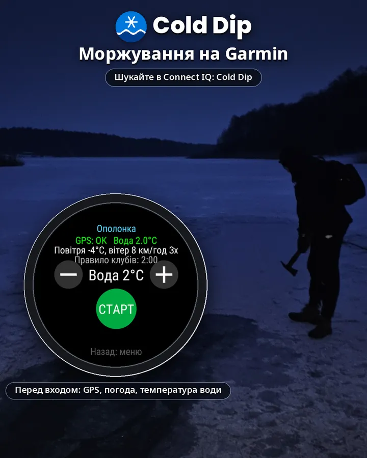
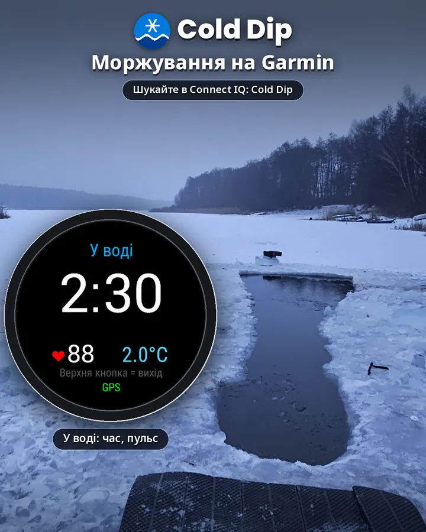
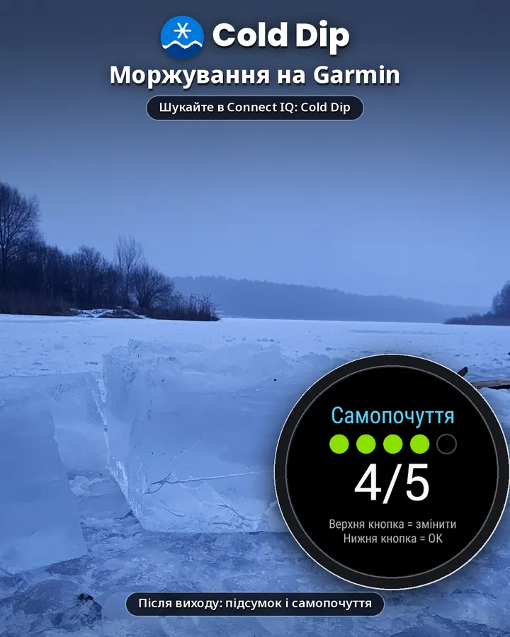
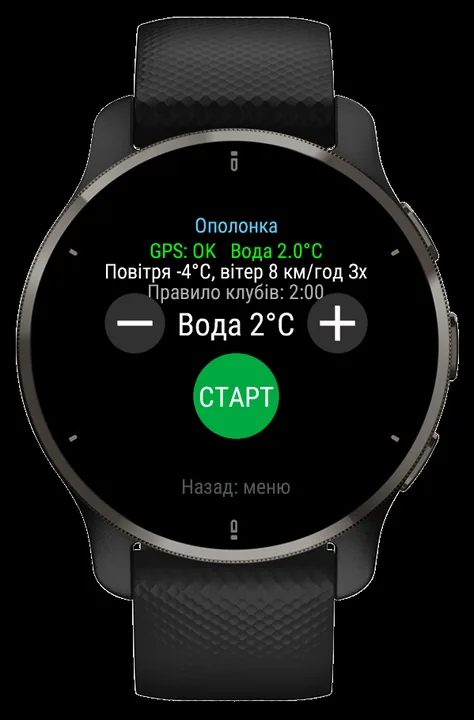
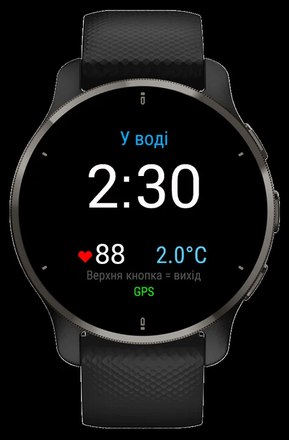
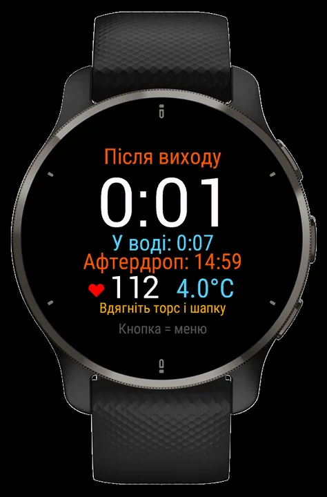

До входу / у воді / після виходу
Верхня кнопка перемикає етапи. Час у воді просто йде — застосунок ніколи не каже вам виходити. Це ваше рішення. Останній час — лише орієнтир, а не ціль, яку треба побити.
На годиннику застосунок називається «Моржування».
Моржування та холодні купання записані як слід — не як плавання.
5,0 у Connect IQ · 400+ завантажень
Або знайдіть «Cold Dip» у застосунку Connect IQ на телефоні.



Платформи
Застосунок уже можна завантажити на годинники Garmin. Версія для Amazfit (Zepp OS) на перевірці в Zepp App Store. Версії для Huawei, Wear OS і Apple Watch уже в роботі.
Зроблено для ополонки, а не для басейну. Рішення завжди за вами.
Верхня кнопка перемикає етапи. Час у воді просто йде — застосунок ніколи не каже вам виходити. Це ваше рішення. Останній час — лише орієнтир, а не ціль, яку треба побити.
Пульс записується весь час. Температуру води ви вводите вручну, і вона зберігається в тренуванні.
Температура повітря, відчутна температура і вітер — з погоди Garmin на телефоні.
Місце входу зберігається і показується на карті в Garmin Connect.
Після кожного заходу — коротка оцінка самопочуття. Також пік і відновлення пульсу, Body Battery і стрес до входу у воду.
Усе зберігається в Garmin Connect як окрема активність, а не як плавання.
Англійська, польська, німецька, чеська, словацька, фінська, норвезька, шведська, іспанська, російська та українська. Застосунок сам перемикається на мову годинника.
Forerunner, Fenix, Epix, Enduro, Venu, Vivoactive, Instinct 2 / 3 / E / Crossover та інші. Не підтримуються дуже старі годинники, наприклад Forerunner 920XT (Connect IQ 1.x).
Необов’язкові доповнення до безкоштовного застосунку — платите, лише якщо вони вам потрібні
Застосунок, яким ви вже користуєтеся, лишається безкоштовним. Pro — для тих, хто хоче більше від сезону: нові способи тренування, яснішу картину прогресу і простіший екран у воді.
4,99 USD одноразовий платіж, плюс ПДВ, якщо він нараховується · 7 днів безкоштовної спроби
Спробуйте Pro безкоштовно 7 днів — потім 4,99 USD Оновити в Connect IQ
Сауна з годинником на зап’ясті, холодний душ, керований контраст сауни та води або коротка підготовка диханням перед входом. Зміну етапу ви завжди підтверджуєте кнопкою.
Названі етапи й сповіщення в обраний вами час на додаток до безкоштовних сигналів щохвилини, в середині та 3-2-1, які лишаються як є.
Загальний час у воді та в сауні, додаткові рекорди й історія до 200 заходів. Безкоштовний список і надалі показує останні 30.
Тримайте серію 7, 14 або 30 днів і отримуйте відзнаки за 10, 25, 50 і 100 заходів, перший захід нижче 5°C, контрастну сесію та сауну плюс воду за один раз.
Великий таймер, сторінка пульсу й кіл і теми (крига, темна, високий контраст, сауна). Сторінку змінюєте кнопками вгору та вниз.
Один великий таймер у воді, температура води і пульс. Одна кнопка для старту й зупинки. Без зайвих меню й екранів. Умикається в налаштуваннях після розблокування Pro.
Запропонований час за температурою води за поширеним клубним правилом (приблизно стільки хвилин, скільки °C, від 0:30 до 5:00). Це лише підказка: застосунок ніколи не закінчує сесію й ніколи не стверджує, що якийсь час безпечний.
На новіших годинниках можна закріпити погляд і ускладнення: щоденну серію, час останнього входження та хвилини сезону. Погляд там безкоштовний. Ускладненням потрібен циферблат, який підтримує ускладнення застосунків.
Після збереження входження проста картка показує час, температуру, самопочуття і серію. Сфотографуйте екран, щоб поділитися. Список історії лишається на годиннику, а в Garmin Connect і далі з’являється FIT-активність. Немає хмарного експорту й картинки для Instagram — Connect IQ сам фото не надішле.
Після входження побачите просту криву пульсу, пік і значення відновлення за 1 і 2 хвилини. Це лише підказка, не медична порада.
Збережіть місце входження з останньою температурою води, яку ви там записали. Коли ви поряд, стартовий екран може показати цей візит. Це не жива температура озера — у Connect IQ немає такого API.
Якщо залишаєте годинник зовні, щоб він не перегрівся, увімкніть опцію: застосунок не чекатиме пульс із зап’ястя в сауні й може запустити етап прогрівання після. Прогрівання можна також почати після води з меню.
| Що входить | Безкоштовно | Pro ⭐ PRO |
|---|---|---|
| Усе, що вже є в Cold Dip 1.0.3 — чотири профілі, історія 30 заходів, рекорди, кероване дихання, GPS та інше | ✓ Так | ✓ Так |
| Сауна, контраст і нові режими ⭐ PRO | — | ✓ Так |
| Власні сигнали у воді ⭐ PRO | — | ✓ Так |
| Весь сезон як на долоні ⭐ PRO | — | ✓ Так |
| Відзнаки та щоденні серії ⭐ PRO | — | ✓ Так |
| Додаткові екрани й колірні теми ⭐ PRO | — | ✓ Так |
| Простий режим, зручний у рукавицях ⭐ PRO | — | ✓ Так |
| Підказка часу — не обмеження ⭐ PRO | — | ✓ Так |
| Погляд і ускладнення циферблата (новіші годинники) | На новіших годинниках | На новіших годинниках |
| Картка входження і список історії ⭐ PRO | — | ✓ Так |
| Графік пульсу і відновлення ⭐ PRO | — | ✓ Так |
| Збережені місця з останньою температурою води ⭐ PRO | — | ✓ Так |
| Годинник зовні сауни і прогрівання ⭐ PRO | — | ✓ Так |
| Ціна | Безкоштовно | 7 днів спроби, потім 4,99 USD одноразово |
Pro працює на новіших годинниках Garmin із Connect IQ 4 або новішим, зокрема Venu 2 / 3 / 4, Venu Sq 2, Venu X1, vívoactive 5 / 6, Forerunner 165 / 170 / 255 / 265 / 570 / 955 / 965 / 970, fēnix 7 / 8 / 9, epix (Gen 2), Instinct 3 AMOLED, Descent Mk3, Enduro 3 / 4, Approach S50 / S70 / S72 і MARQ (Gen 2) / (Gen 3). Він не працює на старіших або обмеженіших за пам’яттю моделях, як-от fēnix 5 / 6, перші Venu, vívoactive 3 / 4, Forerunner 55 / 245 / 645 / 945, Instinct 2, Instinct 3 Solar або Instinct E — безкоштовний застосунок на них і надалі працює. Перевірте свою модель у списку.
У Garmin Connect сесія сауни зберігається як тренування або медитація, бо в Garmin немає типу активності «сауна».
Підказка часу — не медична порада і не означає, що сесія безпечна. Холодна вода і сауна пов’язані з ризиком. Проконсультуйтеся з лікарем, ніколи не заходьте у воду наодинці й покладайтеся на власне судження. Рішення завжди за вами.
Знайдіть свою модель. Список охоплює 133 моделі в Cold Dip.
Дуже старі годинники з Connect IQ 1.x, наприклад Forerunner 920XT, не підтримуються. Pro потрібен новіший пристрій — знайдіть свою модель, щоб перевірити.
Циферблати
Циферблати з моржем для моржування. Mors – tarcza змінюється разом із погодою. Mors Level зростає разом із хвилинами сезону. Dip Goals і Afterdrop невдовзі.


Анімований циферблат із моржем для моржування
3,99 USD 24 години безкоштовної спроби
Незабаром у магазині Connect IQ Завантажити в Connect IQ Детальніше
Ігровий циферблат із моржем для моржування
2,99 USD 7 днів безкоштовної спроби
Незабаром у магазині Connect IQ Завантажити в Connect IQ Детальніше

Кільця цілей: занурення за тиждень, хвилини за сезон і серія, плюс температура води й повітря, Body Battery і пульс. Чотири теми.

Безкоштовний циферблат для Garmin з великим часом і 3 полями. Ніколи не блокується. Додатковий Afterdrop Pro відкриває поля Cold Dip, температуру повітря, схід і захід сонця та 4 додаткові теми.
Анімований циферблат із моржем для моржування
Морж реагує на погоду: хвилі в гарну погоду, шапка в мороз, струшує сніг і стрибає в ополонку, коли час моржувати. Час, дата, температура повітря, погода, пульс, кроки й батарея. Анімація запускається, коли ви будите годинник — ніколи в режимі завжди ввімкненого екрана.
3,99 USD одноразовий платіж, плюс ПДВ, якщо він нараховується
На годинниках AMOLED морж рухається, коли ви піднімаєте зап’ястя — ніколи в режимі завжди ввімкненого екрана.
Повноколірна анімація на годинниках AMOLED, зокрема Venu 2, 2 Plus, 3 і 4, vívoactive 5 і 6, Forerunner 165, 170, 265, 570, 965 і 970, Fenix 8 і 9 (AMOLED), Epix 2, Descent Mk3, D2 Mach, Approach S70 і S72, Instinct 3 AMOLED та MARQ 2 і 3.
Цього циферблата немає на годинниках MIP і моделях з меншою пам’яттю, зокрема Fenix 5 Plus, Fenix 6 і 7, Fenix Solar, Forerunner 245, 255, 745, 945 і 955, Enduro, Descent Mk2, vívoactive 4, Venu 1 і MARQ першого покоління. Ці екрани не покажуть повноколірну анімацію.
Ігровий циферблат із моржем для моржування
Ваш морж росте через 5 рівнів разом із хвилинами в холодній воді за сезон — наживо з безкоштовного застосунку Cold Dip. Узимку пара над ополонкою, влітку пляж, позначка серії днів, температура води, пульс, батарея та чистий режим завжди ввімкненого екрана. Анімація пробудження запускається, коли ви будите годинник — ніколи в режимі завжди ввімкненого екрана.
2,99 USD одноразовий платіж, плюс ПДВ, якщо він нараховується · 7 днів безкоштовної спроби
Щоб рівень зростав наживо — за хвилинами, серією та температурою води — встановіть безкоштовний застосунок Cold Dip. Без нього ці поля просто показують дані годинника.
НОВАЧОК 1/5


5 рівнів
1/5
0–29 хв у цьому сезоні
2/5
30–119 хв у цьому сезоні
3/5
120–299 хв у цьому сезоні
4/5
300–599 хв у цьому сезоні
5/5
600+ хв у цьому сезоні


Повноколірна анімація на 51 годиннику AMOLED, зокрема Venu 2, 2 Plus, 3 і 4, vívoactive 5 і 6, Forerunner 165, 170, 265, 570, 965 і 970, Fenix 8 і 9 (AMOLED), Epix 2, Descent Mk3, D2 Mach, Approach S70 і S72, Instinct 3 AMOLED та MARQ 2 і 3. Режим завжди ввімкненого екрана використовує дуже мало світних пікселів.
Читабельний статичний циферблат на 19 годинниках MIP, зокрема Fenix 7, Fenix 8 Solar, Forerunner 255 і 955, а також Enduro 3 і 4. Загалом Mors Level підтримує 70 годинників Garmin, 11 мовами.
Середня оцінка 5,0 ★ у Connect IQ Store і понад 400 завантажень.
★★★★★
„Super, pierwsze morsowanie z apką za mną, działa! Tego mi było trzeba! Dzięki”
Супер, перше моржування з застосунком позаду, працює! Саме цього мені бракувало! Дякую (Переклад з польської)
★★★★★
„Rewelacyjna apka. Przetestowana podczas morsowania. Wszystko działa dobrze”
Чудовий застосунок. Перевірений під час моржування. Усе працює добре (Переклад з польської)
★★★★★
„Działa nawet na starszym Garminie za co duże brawa dla autora”
Працює навіть на старішому Garmin — великі оплески автору (Переклад з польської)
★★★★★
„Świetna sprawa!💙”
Класна штука!💙 (Переклад з польської)
Одне занурення від старту до збереження — справжні екрани із симулятора Garmin.



Останні версії Cold Dip.
Температура води, введена після виходу з води, тепер стосується лише цієї сесії. Запит ігнорує випадкове натискання кнопки одразу після виходу. Надійніше: повна пам’ять або помилка збереження більше не підвішують застосунок, а непідтримуване поле чи вид спорту на старіших годинниках більше не заважають старту. Виправлено підказки під час зігрівання (польська, російська).
Виправлено аварійне завершення приблизно через 20 с після збереження (повідомлено на Venu 3S). Після виходу з води годинник запитує температуру води; функція безкоштовна і вимикається в налаштуваннях.
З’явився Cold Dip Pro. Усе з 1.0.3 лишається безкоштовним. Pro не обов’язковий: одноразово 4,99 USD і 7 днів безкоштовної спроби. Нові режими: сауна, холодний душ, керований контраст і підготовка диханням; власні сигнали та названі етапи у воді; статистика сезону, відзнаки та денні серії (7 / 14 / 30); додаткові екрани, колірні теми та спрощений режим.
133 моделі, зокрема Instinct 2, Instinct 2S, Instinct 2X, Instinct 3 Solar, Instinct E та Instinct Crossover, а також новий чорно-білий макет для екранів MIP.
126 моделей, зокрема Forerunner 55.
105 моделей, зокрема прямокутні макети для Venu X1 і Venu Sq 2.
Перший випуск.
“Działa idealnie” (Працює ідеально)
Понад 10 хвилин при 5°C — температура води на годиннику, і всі дані збереглися в Garmin Connect.
Кілька речей, про які найчастіше питають після встановлення.
Встановіть його через застосунок Connect IQ Store на телефоні — не через Google Play і не через App Store. На годиннику Cold Dip («Моржування») буде в списку активностей / застосунків.
У профілі «Ополонка» її задають кнопками − / + на стартовому екрані. В інших профілях — через меню: «Темп. води вручну». Якщо у воді видно «--°C», температуру ще не задано.
Відкрийте активність, перейдіть на вкладку «Статистика» і прокрутіть до розділу «Connect IQ». Там будуть пульс, температура води, погода, самопочуття і час етапів. Плитки на екрані «Огляд» задає сам Garmin — застосунок не може їх змінити.
Ні. Годинник не вміє вимірювати температуру тіла. Датчик показує температуру самого годинника, на яку впливають шкіра і повітря. У Cold Dip температуру води ви вводите вручну.
Калорії оцінює сам годинник за пульсом, Cold Dip їх не рахує.
Так. Запис іде на годиннику, тож телефон може лишитися в сумці. Без телефона не буде лише погоди, бо вона береться з погоди Garmin на телефоні. Активність синхронізується з Garmin Connect, коли годинник знову під’єднається до телефона. Телефон потрібен для встановлення і для розблокування Pro.
Годинник сам не виміряє температуру води — його датчик показує температуру самого годинника, нагрітого шкірою і повітрям. У Cold Dip температуру води задаєш кнопками − / + (або в меню), а після виходу з води застосунок про неї запитає. Якщо в тебе сполучений датчик Garmin Tempe, застосунок використає його показання. Датчик годинника і температура повітря ніколи не видаються за температуру води.
Pro — за бажанням, застосунок лишається безкоштовним. Pro додає сауну, холодний душ, контраст із підказками і підготовку диханням, власні сигнали, статистику сезону, значки й щоденну серію, додаткові екрани й теми, спрощений режим, зручний у рукавичках, підказку часу за температурою води (підказка, ніколи не ліміт) і графік пульсу. Разово 4,99 USD після 7 днів безкоштовного пробного періоду. Усі функції Pro.
Оплата йде через KiezelPay. Коли захочеш залишити Pro, на годиннику з’явиться 6-значний код. Введи його на kzl.io/cold-dip-pro (для платних циферблатів: kzl.io/code) і заплати один раз. Тримай телефон поруч із Garmin Connect і ввімкненим Bluetooth — годинник розблоковується через це з’єднання, зазвичай протягом 5 хвилин.
Понад 130 годинників Garmin із Connect IQ: Forerunner, fēnix, epix, Enduro, Venu, vívoactive, Instinct 2 / 3 / E / Crossover та інші. Для Pro потрібен Connect IQ 4 або новіший. Дуже старі моделі, як-от Forerunner 920XT, не підтримуються. Перевір свою модель.
Версія для Amazfit (Zepp OS) готова і чекає на перевірку в Zepp App Store. Версії для Huawei, Wear OS (Samsung Galaxy Watch, Pixel Watch) і Apple Watch у підготовці — термінів поки немає. Отримати сповіщення.
Холодна вода — це серйозно. Це загальні нагадування про безпеку, а не медична порада. Ви самі вирішуєте, коли заходити і коли виходити.
Завжди йдіть із кимось, хто зможе допомогти, якщо щось станеться, або переконайтеся, що за вами хтось стежить з берега.
Якщо ви лише починаєте, звикайте до холоду поступово, а не залишайтеся одразу надовго в дуже холодній воді.
Багато хто починає з короткого часу у воді й лише потім повільно його збільшує. Немає часу, який «треба» витримати.
Виходьте з води, щойно відчуваєте, що треба: при сильному тремтінні, болю, онімінні, сплутаності або просто коли вже досить. Cold Dip ніколи не каже виходити і не ставить час, який треба побити. Останній результат — лише орієнтир.
Якнайшвидше витріться і зігрійтеся, вийшовши з води. Теплий одяг тримайте напоготові ще до входу.
Після виходу температура всередині тіла може ще якийсь час знижуватися, коли холодніша кров повертається зі шкіри та кінцівок. Це часто називають afterdrop. Продовжуйте зігріватися, не поспішайте й зачекайте, доки вам справді стане добре, перш ніж сідати за кермо чи на велосипед.
Cold Dip — застосунок для запису активності, а не медичний виріб, і не дає медичних порад. Він не може сказати, чи безпечно вам заходити в холодну воду. Якщо маєте захворювання, ви вагітні або маєте сумніви, спочатку поговоріть із кваліфікованим фахівцем.
Короткі практичні тексти від моржа. Загальні поради, а не медична консультація.
Популярне клубне правило за температурою води — і чому це не безпечний ліміт.
Чому після виходу може стати ще холодніше і як спокійно зігрітися.
Перші заходи крок за кроком: компанія, короткий час, тепле вбрання напоготові.
Короткий погляд на одне занурення: від стартового екрана до збереження в Garmin Connect.
Cold Dip з’явиться на інших годинниках. Обери свій: відкриється пошта з готовою темою, лишиться натиснути «Надіслати». Я відповім один раз, коли версія буде готова.
Без розсилки й трекерів — лише один лист від мене. · lukasz.pszenny@gmail.com
Ведеш групу, клуб або сторінку моржів? Сміливо радь Cold Dip учасникам. Застосунок безкоштовний, а картинки й текст нижче готові до публікації.
Є ідея застосунку або циферблата для Garmin? Зробімо це разом. Напишіть мені й зазначте, який годинник носите.
Якщо ви вже користуєтеся Cold Dip, відгук у Connect IQ дуже допоможе — дякую!
Cold Dip безкоштовний. Якщо він допомагає в моржуванні, ви можете підтримати роботу над ним.
Пригостіть кавою